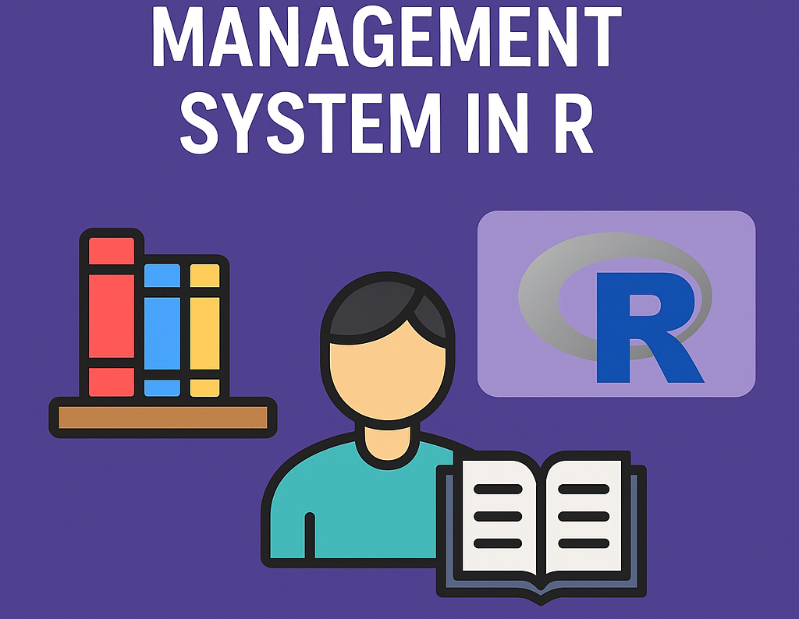
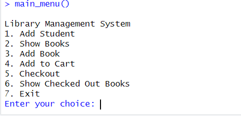

Overview
This is a console-based Library Management System developed using R. It supports basic functionalities like adding student profiles, checking available books, adding to a cart, checking out books, and viewing each student's book history. Data is stored and managed through CSV files using R's data frame operations.
- 📚 Add student profiles with validation
- 📖 Show available books with quantity tracking
- 🛒 Cart feature for book selection
- 📤 Checkout system with CSV-based persistence
- 🧾 Track books checked out by each student
- 🗃️ Modular functions and structured data handling


Future Improvements
- 📋 GUI implementation using Shiny in R
- 🔍 Search functionality for books and students
- 📱 Export data reports in PDF format
- 🧠 Recommendation system for books
- 🔐 Admin login and access control